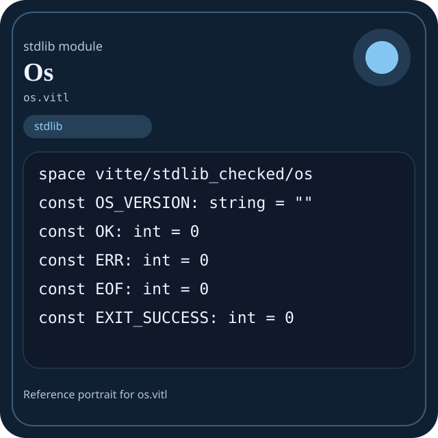

Stdlib module os.vitl
This page is a wiki-style reference for one concrete stdlib file. It explains what the file owns, where it fits in the family, and how to decide whether this is the right surface to depend on.

os.vitl.Family: stdlib
Kind: public stdlib surface
Page style: this reference follows the same “encyclopedic card + portrait + usage contract” logic as the keyword pages, but for stdlib modules.
Summary
- Overview
- Purpose
- Taxonomy
- Implementation profile
- Top-level API inventory
- Position in family
- Declaration map
- Representative signatures
- How to use this module
- User example
- Keyword coverage
- Source shape
- Source landmarks
- Source organization
- Complete API catalog
- Integration boundaries
- Composition guidance
- Relationship table
- Neighbor modules
Overview
| Field | Value |
|---|---|
| Path | os.vitl |
| Family | stdlib |
| Kind | public stdlib surface |
| Line count | 1001 |
| Declared procedures | 167 |
| Declared forms/picks | 30 |
`os.vitl` is a public stdlib surface inside the `stdlib` family. It should be read as one focused slice of the broader family responsibility: Top-level map of the Vitte standard library and the responsibilities owned by each family.
Purpose
This file should be chosen because of responsibility, not because its name “sounds close enough”. Inside the stdlib family, it carries one focused part of the contract and keeps that responsibility separate from neighboring concerns.
- Domain values start in `core` and `strings`.
- Grouped data moves through `collections` or `data`.
- Structured export goes through `json` and `encoding`.
- Filesystem or process interaction goes through `path`, `io`, `os`, or `sysinfo`.
- Explicit runtime coordination goes through `async`, `threading`, `kernel`, or `ffi`.
Taxonomy
Think of this page as a generated encyclopedia entry rather than a hand-written tutorial. The goal is to show what kind of module this is, how dense it is, and what reading strategy makes sense before depending on it.
- Large algorithm surface: this file exposes many procedures and likely acts as a domain toolkit rather than a single thin wrapper.
- Owns domain vocabulary: the module declares data shapes in addition to executable helpers, so its types are part of the contract.
- Has tuning constants: part of the module behavior is controlled by named constants that document default precision, limits, or policy.
- Minimal top-level dependencies: the module reads as mostly self-contained from its opening declarations.
Implementation profile
This profile is inferred directly from the source text. It does not replace reading the file, but it tells you quickly whether the module is mostly declarative, loop-heavy, branch-heavy, or organized around many small exits.
| Signal | Count | What it suggests |
|---|---|---|
if | 0 | Branching density and local decision-making. |
while | 0 | Loop-heavy or iterative implementation style. |
for | 0 | Collection-style traversal at source level. |
match | 0 | Variant-driven branching or grammar-style decoding. |
let | 0 | Local state and intermediate value density. |
give | 167 | Number of explicit exit points and result shaping. |
Top-level API inventory
| Surface | Items |
|---|---|
| Procedures | os_result_ok, os_result_error, os_error, errno_name, strerror, status_from_errno, getpid, getppid, getpgid, getsid, setpgid, fork |
| Forms | OsError, OsResult, Process, ProcessInfo, SpawnOptions, ExecResult, EnvVar, User, Group, SystemInfo, FileDescriptor, FileStat |
| Picks | OsStatus, PlatformKind, ProcessState, FileType, OpenMode, SignalDisposition |
| Constants | OS_VERSION, OK, ERR, EOF, EXIT_SUCCESS, EXIT_FAILURE, STDIN_FILENO, STDOUT_FILENO, STDERR_FILENO, SEEK_SET, SEEK_CUR, SEEK_END |
| Exports | none declared at top level |
Imported surfaces
This file does not advertise a top-level `use` surface in its opening declarations. That often means it is either self-contained or an aggregation layer.
Position in family
This file is module 10 of 15 in the stdlib family when ordered by path. By procedure count it ranks 1, and by line count it ranks 1. Those ranks are useful as rough signals of breadth, not as quality judgments.
Declaration map
The declaration map turns raw source into a scan-friendly catalog. It is useful when the file is large enough that a reader wants to orient by kinds of surfaces first.
| Line | Name | Kind | Role |
|---|---|---|---|
| 1 | vitte/stdlib_checked/os | space | Declares the namespace that anchors this file in the stdlib tree. |
| 9 | OS_VERSION | const | Defines a named constant reused across the module. |
| 11 | OK | const | Defines a named constant reused across the module. |
| 13 | ERR | const | Defines a named constant reused across the module. |
| 15 | EOF | const | Defines a named constant reused across the module. |
| 17 | EXIT_SUCCESS | const | Defines a named constant reused across the module. |
| 19 | EXIT_FAILURE | const | Defines a named constant reused across the module. |
| 21 | STDIN_FILENO | const | Defines a named constant reused across the module. |
| 23 | STDOUT_FILENO | const | Defines a named constant reused across the module. |
| 25 | STDERR_FILENO | const | Defines a named constant reused across the module. |
| 27 | SEEK_SET | const | Defines a named constant reused across the module. |
| 29 | SEEK_CUR | const | Defines a named constant reused across the module. |
| 31 | SEEK_END | const | Defines a named constant reused across the module. |
| 33 | AT_FDCWD | const | Defines a named constant reused across the module. |
| 35 | F_OK | const | Defines a named constant reused across the module. |
| 37 | X_OK | const | Defines a named constant reused across the module. |
| 39 | W_OK | const | Defines a named constant reused across the module. |
| 41 | R_OK | const | Defines a named constant reused across the module. |
| 43 | O_RDONLY | const | Defines a named constant reused across the module. |
| 45 | O_WRONLY | const | Defines a named constant reused across the module. |
| 47 | O_RDWR | const | Defines a named constant reused across the module. |
| 49 | O_CREAT | const | Defines a named constant reused across the module. |
| 51 | O_EXCL | const | Defines a named constant reused across the module. |
| 53 | O_NOCTTY | const | Defines a named constant reused across the module. |
| 55 | O_TRUNC | const | Defines a named constant reused across the module. |
| 57 | O_APPEND | const | Defines a named constant reused across the module. |
| 59 | O_NONBLOCK | const | Defines a named constant reused across the module. |
| 61 | O_DIRECTORY | const | Defines a named constant reused across the module. |
| 63 | O_NOFOLLOW | const | Defines a named constant reused across the module. |
| 65 | O_CLOEXEC | const | Defines a named constant reused across the module. |
| 67 | S_IFMT | const | Defines a named constant reused across the module. |
| 69 | S_IFSOCK | const | Defines a named constant reused across the module. |
| 71 | S_IFLNK | const | Defines a named constant reused across the module. |
| 73 | S_IFREG | const | Defines a named constant reused across the module. |
| 75 | S_IFBLK | const | Defines a named constant reused across the module. |
| 77 | S_IFDIR | const | Defines a named constant reused across the module. |
| 79 | S_IFCHR | const | Defines a named constant reused across the module. |
| 81 | S_IFIFO | const | Defines a named constant reused across the module. |
| 83 | S_IRUSR | const | Defines a named constant reused across the module. |
| 85 | S_IWUSR | const | Defines a named constant reused across the module. |
| 87 | S_IXUSR | const | Defines a named constant reused across the module. |
| 89 | S_IRGRP | const | Defines a named constant reused across the module. |
| 91 | S_IWGRP | const | Defines a named constant reused across the module. |
| 93 | S_IXGRP | const | Defines a named constant reused across the module. |
| 95 | S_IROTH | const | Defines a named constant reused across the module. |
| 97 | S_IWOTH | const | Defines a named constant reused across the module. |
| 99 | S_IXOTH | const | Defines a named constant reused across the module. |
| 101 | SIGINT | const | Defines a named constant reused across the module. |
| 103 | SIGQUIT | const | Defines a named constant reused across the module. |
| 105 | SIGILL | const | Defines a named constant reused across the module. |
| 107 | SIGABRT | const | Defines a named constant reused across the module. |
| 109 | SIGFPE | const | Defines a named constant reused across the module. |
| 111 | SIGKILL | const | Defines a named constant reused across the module. |
| 113 | SIGSEGV | const | Defines a named constant reused across the module. |
| 115 | SIGPIPE | const | Defines a named constant reused across the module. |
| 117 | SIGALRM | const | Defines a named constant reused across the module. |
| 119 | SIGTERM | const | Defines a named constant reused across the module. |
| 121 | SIGCHLD | const | Defines a named constant reused across the module. |
| 123 | SIGCONT | const | Defines a named constant reused across the module. |
| 125 | SIGSTOP | const | Defines a named constant reused across the module. |
| 127 | SIGTSTP | const | Defines a named constant reused across the module. |
| 129 | SIGTTIN | const | Defines a named constant reused across the module. |
| 131 | SIGTTOU | const | Defines a named constant reused across the module. |
| 133 | WNOHANG | const | Defines a named constant reused across the module. |
| 135 | WUNTRACED | const | Defines a named constant reused across the module. |
| 137 | WCONTINUED | const | Defines a named constant reused across the module. |
| 139 | EPERM | const | Defines a named constant reused across the module. |
| 141 | ENOENT | const | Defines a named constant reused across the module. |
| 143 | ESRCH | const | Defines a named constant reused across the module. |
| 145 | EINTR | const | Defines a named constant reused across the module. |
| 147 | EIO | const | Defines a named constant reused across the module. |
| 149 | ENXIO | const | Defines a named constant reused across the module. |
| 151 | E2BIG | const | Defines a named constant reused across the module. |
| 153 | ENOEXEC | const | Defines a named constant reused across the module. |
| 155 | EBADF | const | Defines a named constant reused across the module. |
| 157 | ECHILD | const | Defines a named constant reused across the module. |
| 159 | EAGAIN | const | Defines a named constant reused across the module. |
| 161 | ENOMEM | const | Defines a named constant reused across the module. |
| 163 | EACCES | const | Defines a named constant reused across the module. |
| 165 | EFAULT | const | Defines a named constant reused across the module. |
| 167 | EBUSY | const | Defines a named constant reused across the module. |
| 169 | EEXIST | const | Defines a named constant reused across the module. |
| 171 | EXDEV | const | Defines a named constant reused across the module. |
| 173 | ENODEV | const | Defines a named constant reused across the module. |
| 175 | ENOTDIR | const | Defines a named constant reused across the module. |
| 177 | EISDIR | const | Defines a named constant reused across the module. |
| 179 | EINVAL | const | Defines a named constant reused across the module. |
| 181 | ENFILE | const | Defines a named constant reused across the module. |
| 183 | EMFILE | const | Defines a named constant reused across the module. |
| 185 | ENOTTY | const | Defines a named constant reused across the module. |
| 187 | EFBIG | const | Defines a named constant reused across the module. |
| 189 | ENOSPC | const | Defines a named constant reused across the module. |
| 191 | ESPIPE | const | Defines a named constant reused across the module. |
| 193 | EROFS | const | Defines a named constant reused across the module. |
| 195 | EMLINK | const | Defines a named constant reused across the module. |
| 197 | EPIPE | const | Defines a named constant reused across the module. |
| 199 | ERANGE | const | Defines a named constant reused across the module. |
| 201 | ENOSYS | const | Defines a named constant reused across the module. |
| 203 | ENOTEMPTY | const | Defines a named constant reused across the module. |
| 205 | ELOOP | const | Defines a named constant reused across the module. |
| 207 | ENAMETOOLONG | const | Defines a named constant reused across the module. |
| 209 | ETIMEDOUT | const | Defines a named constant reused across the module. |
| 211 | ECONNREFUSED | const | Defines a named constant reused across the module. |
| 213 | ENOTSUP | const | Defines a named constant reused across the module. |
| 215 | OsStatus | pick | Introduces a tagged variant type used to model distinct outcomes. |
| 219 | PlatformKind | pick | Introduces a tagged variant type used to model distinct outcomes. |
| 223 | ProcessState | pick | Introduces a tagged variant type used to model distinct outcomes. |
| 227 | FileType | pick | Introduces a tagged variant type used to model distinct outcomes. |
| 231 | OpenMode | pick | Introduces a tagged variant type used to model distinct outcomes. |
| 235 | SignalDisposition | pick | Introduces a tagged variant type used to model distinct outcomes. |
| 239 | OsError | form | Introduces a structured data shape that other procedures can exchange. |
| 243 | OsResult | form | Introduces a structured data shape that other procedures can exchange. |
| 247 | Process | form | Introduces a structured data shape that other procedures can exchange. |
| 251 | ProcessInfo | form | Introduces a structured data shape that other procedures can exchange. |
| 255 | SpawnOptions | form | Introduces a structured data shape that other procedures can exchange. |
| 259 | ExecResult | form | Introduces a structured data shape that other procedures can exchange. |
| 263 | EnvVar | form | Introduces a structured data shape that other procedures can exchange. |
| 267 | User | form | Introduces a structured data shape that other procedures can exchange. |
| 271 | Group | form | Introduces a structured data shape that other procedures can exchange. |
| 275 | SystemInfo | form | Introduces a structured data shape that other procedures can exchange. |
| 279 | FileDescriptor | form | Introduces a structured data shape that other procedures can exchange. |
| 283 | FileStat | form | Introduces a structured data shape that other procedures can exchange. |
| 287 | DirEntry | form | Introduces a structured data shape that other procedures can exchange. |
| 291 | PathInfo | form | Introduces a structured data shape that other procedures can exchange. |
| 295 | Pipe | form | Introduces a structured data shape that other procedures can exchange. |
| 299 | WaitStatus | form | Introduces a structured data shape that other procedures can exchange. |
| 303 | SignalAction | form | Introduces a structured data shape that other procedures can exchange. |
| 307 | Timespec | form | Introduces a structured data shape that other procedures can exchange. |
| 311 | Timeval | form | Introduces a structured data shape that other procedures can exchange. |
| 315 | ResourceUsage | form | Introduces a structured data shape that other procedures can exchange. |
| 319 | MountInfo | form | Introduces a structured data shape that other procedures can exchange. |
| 323 | TerminalSize | form | Introduces a structured data shape that other procedures can exchange. |
| 327 | PollFd | form | Introduces a structured data shape that other procedures can exchange. |
| 331 | OsSnapshot | form | Introduces a structured data shape that other procedures can exchange. |
| 335 | os_result_ok | proc | Represents one top-level surface in the file contract and should be read as part of the module boundary. |
| 339 | os_result_error | proc | Represents one top-level surface in the file contract and should be read as part of the module boundary. |
| 343 | os_error | proc | Represents one top-level surface in the file contract and should be read as part of the module boundary. |
| 347 | errno_name | proc | Represents one top-level surface in the file contract and should be read as part of the module boundary. |
| 351 | strerror | proc | Represents one top-level surface in the file contract and should be read as part of the module boundary. |
| 355 | status_from_errno | proc | Represents one top-level surface in the file contract and should be read as part of the module boundary. |
| 359 | getpid | proc | Represents one top-level surface in the file contract and should be read as part of the module boundary. |
| 363 | getppid | proc | Represents one top-level surface in the file contract and should be read as part of the module boundary. |
| 367 | getpgid | proc | Represents one top-level surface in the file contract and should be read as part of the module boundary. |
| 371 | getsid | proc | Represents one top-level surface in the file contract and should be read as part of the module boundary. |
| 375 | setpgid | proc | Represents one top-level surface in the file contract and should be read as part of the module boundary. |
| 379 | fork | proc | Represents one top-level surface in the file contract and should be read as part of the module boundary. |
| 383 | vfork | proc | Represents one top-level surface in the file contract and should be read as part of the module boundary. |
| 387 | exec | proc | Represents one top-level surface in the file contract and should be read as part of the module boundary. |
| 391 | execv | proc | Represents one top-level surface in the file contract and should be read as part of the module boundary. |
| 395 | execve | proc | Represents one top-level surface in the file contract and should be read as part of the module boundary. |
| 399 | execvp | proc | Represents one top-level surface in the file contract and should be read as part of the module boundary. |
| 403 | system | proc | Represents one top-level surface in the file contract and should be read as part of the module boundary. |
| 407 | spawn | proc | Represents one top-level surface in the file contract and should be read as part of the module boundary. |
| 411 | spawn_with_options | proc | Represents one top-level surface in the file contract and should be read as part of the module boundary. |
| 415 | run | proc | Represents one top-level surface in the file contract and should be read as part of the module boundary. |
| 419 | wait | proc | Represents one top-level surface in the file contract and should be read as part of the module boundary. |
| 423 | waitpid | proc | Represents one top-level surface in the file contract and should be read as part of the module boundary. |
| 427 | wait_status_code | proc | Represents one top-level surface in the file contract and should be read as part of the module boundary. |
| 431 | kill | proc | Represents one top-level surface in the file contract and should be read as part of the module boundary. |
| 435 | signal | proc | Represents one top-level surface in the file contract and should be read as part of the module boundary. |
| 439 | signal_ignore | proc | Represents one top-level surface in the file contract and should be read as part of the module boundary. |
| 443 | signal_default | proc | Represents one top-level surface in the file contract and should be read as part of the module boundary. |
| 447 | raise | proc | Represents one top-level surface in the file contract and should be read as part of the module boundary. |
| 451 | pause | proc | Represents one top-level surface in the file contract and should be read as part of the module boundary. |
| 455 | exit | proc | Represents one top-level surface in the file contract and should be read as part of the module boundary. |
| 459 | abort | proc | Represents one top-level surface in the file contract and should be read as part of the module boundary. |
| 463 | process_current | proc | Represents one top-level surface in the file contract and should be read as part of the module boundary. |
| 467 | process_info | proc | Represents one top-level surface in the file contract and should be read as part of the module boundary. |
| 471 | process_list | proc | Owns a concrete data shape or the operations that maintain it. |
| 475 | process_exists | proc | Represents one top-level surface in the file contract and should be read as part of the module boundary. |
| 479 | process_kill | proc | Represents one top-level surface in the file contract and should be read as part of the module boundary. |
| 483 | getuid | proc | Represents one top-level surface in the file contract and should be read as part of the module boundary. |
| 487 | geteuid | proc | Represents one top-level surface in the file contract and should be read as part of the module boundary. |
| 491 | getgid | proc | Represents one top-level surface in the file contract and should be read as part of the module boundary. |
| 495 | getegid | proc | Represents one top-level surface in the file contract and should be read as part of the module boundary. |
| 499 | setuid | proc | Represents one top-level surface in the file contract and should be read as part of the module boundary. |
| 503 | setgid | proc | Represents one top-level surface in the file contract and should be read as part of the module boundary. |
| 507 | getuser | proc | Represents one top-level surface in the file contract and should be read as part of the module boundary. |
| 511 | getgroup | proc | Represents one top-level surface in the file contract and should be read as part of the module boundary. |
| 515 | getenv | proc | Represents one top-level surface in the file contract and should be read as part of the module boundary. |
| 519 | getenv_or | proc | Represents one top-level surface in the file contract and should be read as part of the module boundary. |
| 523 | setenv | proc | Represents one top-level surface in the file contract and should be read as part of the module boundary. |
| 527 | unsetenv | proc | Represents one top-level surface in the file contract and should be read as part of the module boundary. |
| 531 | hasenv | proc | Represents one top-level surface in the file contract and should be read as part of the module boundary. |
| 535 | env_list | proc | Owns a concrete data shape or the operations that maintain it. |
| 539 | env_get_all | proc | Represents one top-level surface in the file contract and should be read as part of the module boundary. |
| 543 | env_clear | proc | Represents one top-level surface in the file contract and should be read as part of the module boundary. |
| 547 | env_find | proc | Represents one top-level surface in the file contract and should be read as part of the module boundary. |
| 551 | env_set_local | proc | Owns a concrete data shape or the operations that maintain it. |
| 555 | chdir | proc | Represents one top-level surface in the file contract and should be read as part of the module boundary. |
| 559 | getcwd | proc | Represents one top-level surface in the file contract and should be read as part of the module boundary. |
| 563 | cwd | proc | Represents one top-level surface in the file contract and should be read as part of the module boundary. |
| 567 | gethostname | proc | Represents one top-level surface in the file contract and should be read as part of the module boundary. |
| 571 | sethostname | proc | Represents one top-level surface in the file contract and should be read as part of the module boundary. |
| 575 | uname | proc | Represents one top-level surface in the file contract and should be read as part of the module boundary. |
| 579 | system_info | proc | Represents one top-level surface in the file contract and should be read as part of the module boundary. |
| 583 | os_name | proc | Represents one top-level surface in the file contract and should be read as part of the module boundary. |
| 587 | os_version | proc | Represents one top-level surface in the file contract and should be read as part of the module boundary. |
| 591 | kernel_version | proc | Represents one top-level surface in the file contract and should be read as part of the module boundary. |
| 595 | arch_name | proc | Represents one top-level surface in the file contract and should be read as part of the module boundary. |
| 599 | platform_kind | proc | Represents one top-level surface in the file contract and should be read as part of the module boundary. |
| 603 | is_unix | proc | Represents one top-level surface in the file contract and should be read as part of the module boundary. |
| 607 | is_windows | proc | Represents one top-level surface in the file contract and should be read as part of the module boundary. |
| 611 | is_vitte_os | proc | Represents one top-level surface in the file contract and should be read as part of the module boundary. |
| 615 | is_kernel | proc | Represents one top-level surface in the file contract and should be read as part of the module boundary. |
| 619 | cpu_count | proc | Represents one top-level surface in the file contract and should be read as part of the module boundary. |
| 623 | page_size | proc | Represents one top-level surface in the file contract and should be read as part of the module boundary. |
| 627 | uptime | proc | Represents one top-level surface in the file contract and should be read as part of the module boundary. |
| 631 | clock_time | proc | Represents one top-level surface in the file contract and should be read as part of the module boundary. |
| 635 | time_now | proc | Represents one top-level surface in the file contract and should be read as part of the module boundary. |
| 639 | gettimeofday | proc | Represents one top-level surface in the file contract and should be read as part of the module boundary. |
| 643 | timespec | proc | Represents one top-level surface in the file contract and should be read as part of the module boundary. |
| 647 | timeval | proc | Represents one top-level surface in the file contract and should be read as part of the module boundary. |
| 651 | sleep | proc | Represents one top-level surface in the file contract and should be read as part of the module boundary. |
| 655 | usleep | proc | Represents one top-level surface in the file contract and should be read as part of the module boundary. |
| 659 | nanosleep | proc | Represents one top-level surface in the file contract and should be read as part of the module boundary. |
| 663 | open | proc | Represents one top-level surface in the file contract and should be read as part of the module boundary. |
| 667 | open_mode | proc | Represents one top-level surface in the file contract and should be read as part of the module boundary. |
| 671 | close | proc | Represents one top-level surface in the file contract and should be read as part of the module boundary. |
| 675 | read | proc | Owns byte movement or host I/O interaction. |
| 679 | write | proc | Owns byte movement or host I/O interaction. |
| 683 | pread | proc | Represents one top-level surface in the file contract and should be read as part of the module boundary. |
| 687 | pwrite | proc | Represents one top-level surface in the file contract and should be read as part of the module boundary. |
| 691 | lseek | proc | Represents one top-level surface in the file contract and should be read as part of the module boundary. |
| 695 | dup | proc | Represents one top-level surface in the file contract and should be read as part of the module boundary. |
| 699 | dup2 | proc | Represents one top-level surface in the file contract and should be read as part of the module boundary. |
| 703 | pipe | proc | Represents one top-level surface in the file contract and should be read as part of the module boundary. |
| 707 | pipe2 | proc | Represents one top-level surface in the file contract and should be read as part of the module boundary. |
| 711 | poll | proc | Represents one top-level surface in the file contract and should be read as part of the module boundary. |
| 715 | os_select | proc | Represents one top-level surface in the file contract and should be read as part of the module boundary. |
| 719 | file_descriptor | proc | Owns byte movement or host I/O interaction. |
| 723 | fd_valid | proc | Represents one top-level surface in the file contract and should be read as part of the module boundary. |
| 727 | fd_is_standard | proc | Represents one top-level surface in the file contract and should be read as part of the module boundary. |
| 731 | empty_stat | proc | Represents one top-level surface in the file contract and should be read as part of the module boundary. |
| 735 | stat | proc | Represents one top-level surface in the file contract and should be read as part of the module boundary. |
| 739 | lstat | proc | Represents one top-level surface in the file contract and should be read as part of the module boundary. |
| 743 | fstat | proc | Represents one top-level surface in the file contract and should be read as part of the module boundary. |
| 747 | mode_is_file | proc | Owns byte movement or host I/O interaction. |
| 751 | mode_is_dir | proc | Represents one top-level surface in the file contract and should be read as part of the module boundary. |
| 755 | mode_is_symlink | proc | Represents one top-level surface in the file contract and should be read as part of the module boundary. |
| 759 | exists | proc | Represents one top-level surface in the file contract and should be read as part of the module boundary. |
| 763 | is_file | proc | Owns byte movement or host I/O interaction. |
| 767 | is_dir | proc | Represents one top-level surface in the file contract and should be read as part of the module boundary. |
| 771 | is_symlink | proc | Represents one top-level surface in the file contract and should be read as part of the module boundary. |
| 775 | file_size | proc | Owns byte movement or host I/O interaction. |
| 779 | chmod | proc | Represents one top-level surface in the file contract and should be read as part of the module boundary. |
| 783 | chown | proc | Represents one top-level surface in the file contract and should be read as part of the module boundary. |
| 787 | mkdir | proc | Represents one top-level surface in the file contract and should be read as part of the module boundary. |
| 791 | mkdir_all | proc | Represents one top-level surface in the file contract and should be read as part of the module boundary. |
| 795 | rmdir | proc | Represents one top-level surface in the file contract and should be read as part of the module boundary. |
| 799 | unlink | proc | Represents one top-level surface in the file contract and should be read as part of the module boundary. |
| 803 | remove | proc | Represents one top-level surface in the file contract and should be read as part of the module boundary. |
| 807 | rename | proc | Represents one top-level surface in the file contract and should be read as part of the module boundary. |
| 811 | link | proc | Represents one top-level surface in the file contract and should be read as part of the module boundary. |
| 815 | symlink | proc | Represents one top-level surface in the file contract and should be read as part of the module boundary. |
| 819 | readlink | proc | Represents one top-level surface in the file contract and should be read as part of the module boundary. |
| 823 | truncate | proc | Represents one top-level surface in the file contract and should be read as part of the module boundary. |
| 827 | ftruncate | proc | Represents one top-level surface in the file contract and should be read as part of the module boundary. |
| 831 | access | proc | Represents one top-level surface in the file contract and should be read as part of the module boundary. |
| 835 | list_dir | proc | Owns a concrete data shape or the operations that maintain it. |
| 839 | dir_names | proc | Represents one top-level surface in the file contract and should be read as part of the module boundary. |
| 843 | mount | proc | Represents one top-level surface in the file contract and should be read as part of the module boundary. |
| 847 | umount | proc | Represents one top-level surface in the file contract and should be read as part of the module boundary. |
| 851 | mounts | proc | Represents one top-level surface in the file contract and should be read as part of the module boundary. |
| 855 | path_sep | proc | Owns path semantics, traversal, or normalization. |
| 859 | path_join | proc | Owns path semantics, traversal, or normalization. |
| 863 | path_join3 | proc | Owns path semantics, traversal, or normalization. |
| 867 | path_is_absolute | proc | Owns path semantics, traversal, or normalization. |
| 871 | path_is_relative | proc | Owns path semantics, traversal, or normalization. |
| 875 | path_normalize | proc | Owns path semantics, traversal, or normalization. |
| 879 | basename | proc | Represents one top-level surface in the file contract and should be read as part of the module boundary. |
| 883 | dirname | proc | Represents one top-level surface in the file contract and should be read as part of the module boundary. |
| 887 | extension | proc | Represents one top-level surface in the file contract and should be read as part of the module boundary. |
| 891 | stem | proc | Represents one top-level surface in the file contract and should be read as part of the module boundary. |
| 895 | path_parse | proc | Transforms an input representation into a structured internal value. |
| 899 | tmpdir | proc | Represents one top-level surface in the file contract and should be read as part of the module boundary. |
| 903 | tmpnam | proc | Represents one top-level surface in the file contract and should be read as part of the module boundary. |
| 907 | mktemp | proc | Represents one top-level surface in the file contract and should be read as part of the module boundary. |
| 911 | mkstemp | proc | Represents one top-level surface in the file contract and should be read as part of the module boundary. |
| 915 | terminal_size | proc | Represents one top-level surface in the file contract and should be read as part of the module boundary. |
| 919 | isatty | proc | Represents one top-level surface in the file contract and should be read as part of the module boundary. |
| 923 | ttyname | proc | Represents one top-level surface in the file contract and should be read as part of the module boundary. |
| 927 | resource_usage | proc | Represents one top-level surface in the file contract and should be read as part of the module boundary. |
| 931 | getrusage | proc | Represents one top-level surface in the file contract and should be read as part of the module boundary. |
| 935 | reboot | proc | Represents one top-level surface in the file contract and should be read as part of the module boundary. |
| 939 | shutdown | proc | Represents one top-level surface in the file contract and should be read as part of the module boundary. |
| 943 | panic_os | proc | Represents one top-level surface in the file contract and should be read as part of the module boundary. |
| 947 | syscall0 | proc | Represents one top-level surface in the file contract and should be read as part of the module boundary. |
| 951 | syscall1 | proc | Represents one top-level surface in the file contract and should be read as part of the module boundary. |
| 955 | syscall2 | proc | Represents one top-level surface in the file contract and should be read as part of the module boundary. |
| 959 | syscall3 | proc | Represents one top-level surface in the file contract and should be read as part of the module boundary. |
| 963 | syscall4 | proc | Represents one top-level surface in the file contract and should be read as part of the module boundary. |
| 967 | syscall5 | proc | Represents one top-level surface in the file contract and should be read as part of the module boundary. |
| 971 | syscall6 | proc | Represents one top-level surface in the file contract and should be read as part of the module boundary. |
| 975 | os_snapshot | proc | Represents one top-level surface in the file contract and should be read as part of the module boundary. |
| 979 | string_starts_with | proc | Represents one top-level surface in the file contract and should be read as part of the module boundary. |
| 983 | string_ends_with | proc | Represents one top-level surface in the file contract and should be read as part of the module boundary. |
| 987 | os_domains | proc | Represents one top-level surface in the file contract and should be read as part of the module boundary. |
| 991 | os_ready | proc | Represents one top-level surface in the file contract and should be read as part of the module boundary. |
| 995 | library_meta | proc | Represents one top-level surface in the file contract and should be read as part of the module boundary. |
| 999 | os_selftest | proc | Represents one top-level surface in the file contract and should be read as part of the module boundary. |
The table is exhaustive for top-level declarations of the selected kinds. This file declares 301 matching surfaces.
Representative signatures
These signatures are shown in source order so the page keeps the feel of a reference manual, not just a keyword cloud.
const OS_VERSION: string = ""(line 9)const OK: int = 0(line 11)const ERR: int = 0(line 13)const EOF: int = 0(line 15)const EXIT_SUCCESS: int = 0(line 17)const EXIT_FAILURE: int = 0(line 19)const STDIN_FILENO: int = 0(line 21)const STDOUT_FILENO: int = 0(line 23)const STDERR_FILENO: int = 0(line 25)const SEEK_SET: int = 0(line 27)const SEEK_CUR: int = 0(line 29)const SEEK_END: int = 0(line 31)const AT_FDCWD: int = 0(line 33)const F_OK: int = 0(line 35)const X_OK: int = 0(line 37)const W_OK: int = 0(line 39)const R_OK: int = 0(line 41)const O_RDONLY: int = 0(line 43)
The list is intentionally capped here; the source file declares 300 matching signatures in total.
How to use this module
Start by reading the file as an ownership boundary. Ask three questions: what enters this module, what stable types or procedures it exports, and what adjacent module should stay outside of it.
- Read
spaceand top-level imports first so the ownership boundary ofos.vitlis explicit. - Scan constants before procedures; they often encode precision, limits, or policy assumptions that explain later behavior.
- Read declared forms and picks before algorithms so the data vocabulary is stable in your head.
- Traverse procedures in source order; the early helpers usually explain the naming and numeric conventions used later.
- Only after that compare neighbor modules, because the right boundary choice matters more than memorizing one helper name.
User example
This example is generated from the actual stdlib module surface. Its job is not to be the smallest snippet possible; its job is to show a realistic consumer-shaped file that exercises the module and mirrors the language keywords the module itself relies on.
space demo/os
form DemoState {
ready: bool,
note: string
}
proc run_example() -> DemoState {
let ready: bool = os_result_ok()
give DemoState { ready: ready, note: "ok" }
}Keyword coverage
This table makes the “all keywords of the module” requirement auditable. It compares the detected Vitte keywords in the source file with the generated consumer example above.
| Keyword | Present in module source | Used in generated user example |
|---|---|---|
space | yes | yes |
const | yes | no |
form | yes | yes |
pick | yes | no |
proc | yes | yes |
give | yes | yes |
Keywords still not exercised directly in the generated snippet: const, pick. The page still lists them here so the gap is visible.
Source shape
space vitte/stdlib_checked/os
const OS_VERSION: string = ""
const OK: int = 0
const ERR: int = 0
const EOF: int = 0
const EXIT_SUCCESS: int = 0
const EXIT_FAILURE: int = 0
const STDIN_FILENO: int = 0
const STDOUT_FILENO: int = 0
const STDERR_FILENO: int = 0The excerpt is not meant to replace the file. It exists to make the module recognizable at first glance, the same way a Wikipedia infobox helps the reader orient before reading the whole article.
Source landmarks
Large files are easier to retain when they have visible landmarks. When the source contains explicit section banners, they are surfaced here; otherwise the first major declarations are used as anchors.
- Line 1:
space vitte/stdlib_checked/os - Line 9:
const OS_VERSION: string = "" - Line 11:
const OK: int = 0 - Line 13:
const ERR: int = 0 - Line 15:
const EOF: int = 0 - Line 17:
const EXIT_SUCCESS: int = 0 - Line 19:
const EXIT_FAILURE: int = 0 - Line 21:
const STDIN_FILENO: int = 0
Source organization
When a file carries its own internal chaptering, those chapters usually reveal the intended reading order better than a flat symbol list. This section reconstructs that organization from the source itself.
File surfaces
Top-level items: 301. Procedures: 167. Data surfaces: 30. Constants: 103.
First visible names: vitte/stdlib_checked/os, OS_VERSION, OK, ERR, EOF, EXIT_SUCCESS, EXIT_FAILURE, STDIN_FILENO, STDOUT_FILENO, STDERR_FILENO
Complete API catalog
This catalog is the exhaustive file-level index for the module. It is intentionally closer to a generated encyclopedia appendix than to a tutorial summary.
Constants
| Line | Name | Signature | Role |
|---|---|---|---|
| 9 | OS_VERSION | const OS_VERSION: string = "" | Defines a named constant reused across the module. |
| 11 | OK | const OK: int = 0 | Defines a named constant reused across the module. |
| 13 | ERR | const ERR: int = 0 | Defines a named constant reused across the module. |
| 15 | EOF | const EOF: int = 0 | Defines a named constant reused across the module. |
| 17 | EXIT_SUCCESS | const EXIT_SUCCESS: int = 0 | Defines a named constant reused across the module. |
| 19 | EXIT_FAILURE | const EXIT_FAILURE: int = 0 | Defines a named constant reused across the module. |
| 21 | STDIN_FILENO | const STDIN_FILENO: int = 0 | Defines a named constant reused across the module. |
| 23 | STDOUT_FILENO | const STDOUT_FILENO: int = 0 | Defines a named constant reused across the module. |
| 25 | STDERR_FILENO | const STDERR_FILENO: int = 0 | Defines a named constant reused across the module. |
| 27 | SEEK_SET | const SEEK_SET: int = 0 | Defines a named constant reused across the module. |
| 29 | SEEK_CUR | const SEEK_CUR: int = 0 | Defines a named constant reused across the module. |
| 31 | SEEK_END | const SEEK_END: int = 0 | Defines a named constant reused across the module. |
| 33 | AT_FDCWD | const AT_FDCWD: int = 0 | Defines a named constant reused across the module. |
| 35 | F_OK | const F_OK: int = 0 | Defines a named constant reused across the module. |
| 37 | X_OK | const X_OK: int = 0 | Defines a named constant reused across the module. |
| 39 | W_OK | const W_OK: int = 0 | Defines a named constant reused across the module. |
| 41 | R_OK | const R_OK: int = 0 | Defines a named constant reused across the module. |
| 43 | O_RDONLY | const O_RDONLY: int = 0 | Defines a named constant reused across the module. |
| 45 | O_WRONLY | const O_WRONLY: int = 0 | Defines a named constant reused across the module. |
| 47 | O_RDWR | const O_RDWR: int = 0 | Defines a named constant reused across the module. |
| 49 | O_CREAT | const O_CREAT: int = 0 | Defines a named constant reused across the module. |
| 51 | O_EXCL | const O_EXCL: int = 0 | Defines a named constant reused across the module. |
| 53 | O_NOCTTY | const O_NOCTTY: int = 0 | Defines a named constant reused across the module. |
| 55 | O_TRUNC | const O_TRUNC: int = 0 | Defines a named constant reused across the module. |
| 57 | O_APPEND | const O_APPEND: int = 0 | Defines a named constant reused across the module. |
| 59 | O_NONBLOCK | const O_NONBLOCK: int = 0 | Defines a named constant reused across the module. |
| 61 | O_DIRECTORY | const O_DIRECTORY: int = 0 | Defines a named constant reused across the module. |
| 63 | O_NOFOLLOW | const O_NOFOLLOW: int = 0 | Defines a named constant reused across the module. |
| 65 | O_CLOEXEC | const O_CLOEXEC: int = 0 | Defines a named constant reused across the module. |
| 67 | S_IFMT | const S_IFMT: int = 0 | Defines a named constant reused across the module. |
| 69 | S_IFSOCK | const S_IFSOCK: int = 0 | Defines a named constant reused across the module. |
| 71 | S_IFLNK | const S_IFLNK: int = 0 | Defines a named constant reused across the module. |
| 73 | S_IFREG | const S_IFREG: int = 0 | Defines a named constant reused across the module. |
| 75 | S_IFBLK | const S_IFBLK: int = 0 | Defines a named constant reused across the module. |
| 77 | S_IFDIR | const S_IFDIR: int = 0 | Defines a named constant reused across the module. |
| 79 | S_IFCHR | const S_IFCHR: int = 0 | Defines a named constant reused across the module. |
| 81 | S_IFIFO | const S_IFIFO: int = 0 | Defines a named constant reused across the module. |
| 83 | S_IRUSR | const S_IRUSR: int = 0 | Defines a named constant reused across the module. |
| 85 | S_IWUSR | const S_IWUSR: int = 0 | Defines a named constant reused across the module. |
| 87 | S_IXUSR | const S_IXUSR: int = 0 | Defines a named constant reused across the module. |
| 89 | S_IRGRP | const S_IRGRP: int = 0 | Defines a named constant reused across the module. |
| 91 | S_IWGRP | const S_IWGRP: int = 0 | Defines a named constant reused across the module. |
| 93 | S_IXGRP | const S_IXGRP: int = 0 | Defines a named constant reused across the module. |
| 95 | S_IROTH | const S_IROTH: int = 0 | Defines a named constant reused across the module. |
| 97 | S_IWOTH | const S_IWOTH: int = 0 | Defines a named constant reused across the module. |
| 99 | S_IXOTH | const S_IXOTH: int = 0 | Defines a named constant reused across the module. |
| 101 | SIGINT | const SIGINT: int = 0 | Defines a named constant reused across the module. |
| 103 | SIGQUIT | const SIGQUIT: int = 0 | Defines a named constant reused across the module. |
| 105 | SIGILL | const SIGILL: int = 0 | Defines a named constant reused across the module. |
| 107 | SIGABRT | const SIGABRT: int = 0 | Defines a named constant reused across the module. |
| 109 | SIGFPE | const SIGFPE: int = 0 | Defines a named constant reused across the module. |
| 111 | SIGKILL | const SIGKILL: int = 0 | Defines a named constant reused across the module. |
| 113 | SIGSEGV | const SIGSEGV: int = 0 | Defines a named constant reused across the module. |
| 115 | SIGPIPE | const SIGPIPE: int = 0 | Defines a named constant reused across the module. |
| 117 | SIGALRM | const SIGALRM: int = 0 | Defines a named constant reused across the module. |
| 119 | SIGTERM | const SIGTERM: int = 0 | Defines a named constant reused across the module. |
| 121 | SIGCHLD | const SIGCHLD: int = 0 | Defines a named constant reused across the module. |
| 123 | SIGCONT | const SIGCONT: int = 0 | Defines a named constant reused across the module. |
| 125 | SIGSTOP | const SIGSTOP: int = 0 | Defines a named constant reused across the module. |
| 127 | SIGTSTP | const SIGTSTP: int = 0 | Defines a named constant reused across the module. |
| 129 | SIGTTIN | const SIGTTIN: int = 0 | Defines a named constant reused across the module. |
| 131 | SIGTTOU | const SIGTTOU: int = 0 | Defines a named constant reused across the module. |
| 133 | WNOHANG | const WNOHANG: int = 0 | Defines a named constant reused across the module. |
| 135 | WUNTRACED | const WUNTRACED: int = 0 | Defines a named constant reused across the module. |
| 137 | WCONTINUED | const WCONTINUED: int = 0 | Defines a named constant reused across the module. |
| 139 | EPERM | const EPERM: int = 0 | Defines a named constant reused across the module. |
| 141 | ENOENT | const ENOENT: int = 0 | Defines a named constant reused across the module. |
| 143 | ESRCH | const ESRCH: int = 0 | Defines a named constant reused across the module. |
| 145 | EINTR | const EINTR: int = 0 | Defines a named constant reused across the module. |
| 147 | EIO | const EIO: int = 0 | Defines a named constant reused across the module. |
| 149 | ENXIO | const ENXIO: int = 0 | Defines a named constant reused across the module. |
| 151 | E2BIG | const E2BIG: int = 0 | Defines a named constant reused across the module. |
| 153 | ENOEXEC | const ENOEXEC: int = 0 | Defines a named constant reused across the module. |
| 155 | EBADF | const EBADF: int = 0 | Defines a named constant reused across the module. |
| 157 | ECHILD | const ECHILD: int = 0 | Defines a named constant reused across the module. |
| 159 | EAGAIN | const EAGAIN: int = 0 | Defines a named constant reused across the module. |
| 161 | ENOMEM | const ENOMEM: int = 0 | Defines a named constant reused across the module. |
| 163 | EACCES | const EACCES: int = 0 | Defines a named constant reused across the module. |
| 165 | EFAULT | const EFAULT: int = 0 | Defines a named constant reused across the module. |
| 167 | EBUSY | const EBUSY: int = 0 | Defines a named constant reused across the module. |
| 169 | EEXIST | const EEXIST: int = 0 | Defines a named constant reused across the module. |
| 171 | EXDEV | const EXDEV: int = 0 | Defines a named constant reused across the module. |
| 173 | ENODEV | const ENODEV: int = 0 | Defines a named constant reused across the module. |
| 175 | ENOTDIR | const ENOTDIR: int = 0 | Defines a named constant reused across the module. |
| 177 | EISDIR | const EISDIR: int = 0 | Defines a named constant reused across the module. |
| 179 | EINVAL | const EINVAL: int = 0 | Defines a named constant reused across the module. |
| 181 | ENFILE | const ENFILE: int = 0 | Defines a named constant reused across the module. |
| 183 | EMFILE | const EMFILE: int = 0 | Defines a named constant reused across the module. |
| 185 | ENOTTY | const ENOTTY: int = 0 | Defines a named constant reused across the module. |
| 187 | EFBIG | const EFBIG: int = 0 | Defines a named constant reused across the module. |
| 189 | ENOSPC | const ENOSPC: int = 0 | Defines a named constant reused across the module. |
| 191 | ESPIPE | const ESPIPE: int = 0 | Defines a named constant reused across the module. |
| 193 | EROFS | const EROFS: int = 0 | Defines a named constant reused across the module. |
| 195 | EMLINK | const EMLINK: int = 0 | Defines a named constant reused across the module. |
| 197 | EPIPE | const EPIPE: int = 0 | Defines a named constant reused across the module. |
| 199 | ERANGE | const ERANGE: int = 0 | Defines a named constant reused across the module. |
| 201 | ENOSYS | const ENOSYS: int = 0 | Defines a named constant reused across the module. |
| 203 | ENOTEMPTY | const ENOTEMPTY: int = 0 | Defines a named constant reused across the module. |
| 205 | ELOOP | const ELOOP: int = 0 | Defines a named constant reused across the module. |
| 207 | ENAMETOOLONG | const ENAMETOOLONG: int = 0 | Defines a named constant reused across the module. |
| 209 | ETIMEDOUT | const ETIMEDOUT: int = 0 | Defines a named constant reused across the module. |
| 211 | ECONNREFUSED | const ECONNREFUSED: int = 0 | Defines a named constant reused across the module. |
| 213 | ENOTSUP | const ENOTSUP: int = 0 | Defines a named constant reused across the module. |
Data surfaces
| Line | Name | Signature | Role |
|---|---|---|---|
| 215 | OsStatus | pick OsStatus { | Introduces a tagged variant type used to model distinct outcomes. |
| 219 | PlatformKind | pick PlatformKind { | Introduces a tagged variant type used to model distinct outcomes. |
| 223 | ProcessState | pick ProcessState { | Introduces a tagged variant type used to model distinct outcomes. |
| 227 | FileType | pick FileType { | Introduces a tagged variant type used to model distinct outcomes. |
| 231 | OpenMode | pick OpenMode { | Introduces a tagged variant type used to model distinct outcomes. |
| 235 | SignalDisposition | pick SignalDisposition { | Introduces a tagged variant type used to model distinct outcomes. |
| 239 | OsError | form OsError { | Introduces a structured data shape that other procedures can exchange. |
| 243 | OsResult | form OsResult { | Introduces a structured data shape that other procedures can exchange. |
| 247 | Process | form Process { | Introduces a structured data shape that other procedures can exchange. |
| 251 | ProcessInfo | form ProcessInfo { | Introduces a structured data shape that other procedures can exchange. |
| 255 | SpawnOptions | form SpawnOptions { | Introduces a structured data shape that other procedures can exchange. |
| 259 | ExecResult | form ExecResult { | Introduces a structured data shape that other procedures can exchange. |
| 263 | EnvVar | form EnvVar { | Introduces a structured data shape that other procedures can exchange. |
| 267 | User | form User { | Introduces a structured data shape that other procedures can exchange. |
| 271 | Group | form Group { | Introduces a structured data shape that other procedures can exchange. |
| 275 | SystemInfo | form SystemInfo { | Introduces a structured data shape that other procedures can exchange. |
| 279 | FileDescriptor | form FileDescriptor { | Introduces a structured data shape that other procedures can exchange. |
| 283 | FileStat | form FileStat { | Introduces a structured data shape that other procedures can exchange. |
| 287 | DirEntry | form DirEntry { | Introduces a structured data shape that other procedures can exchange. |
| 291 | PathInfo | form PathInfo { | Introduces a structured data shape that other procedures can exchange. |
| 295 | Pipe | form Pipe { | Introduces a structured data shape that other procedures can exchange. |
| 299 | WaitStatus | form WaitStatus { | Introduces a structured data shape that other procedures can exchange. |
| 303 | SignalAction | form SignalAction { | Introduces a structured data shape that other procedures can exchange. |
| 307 | Timespec | form Timespec { | Introduces a structured data shape that other procedures can exchange. |
| 311 | Timeval | form Timeval { | Introduces a structured data shape that other procedures can exchange. |
| 315 | ResourceUsage | form ResourceUsage { | Introduces a structured data shape that other procedures can exchange. |
| 319 | MountInfo | form MountInfo { | Introduces a structured data shape that other procedures can exchange. |
| 323 | TerminalSize | form TerminalSize { | Introduces a structured data shape that other procedures can exchange. |
| 327 | PollFd | form PollFd { | Introduces a structured data shape that other procedures can exchange. |
| 331 | OsSnapshot | form OsSnapshot { | Introduces a structured data shape that other procedures can exchange. |
Procedures
| Line | Name | Signature | Role |
|---|---|---|---|
| 335 | os_result_ok | proc os_result_ok() -> int { | Represents one top-level surface in the file contract and should be read as part of the module boundary. |
| 339 | os_result_error | proc os_result_error() -> int { | Represents one top-level surface in the file contract and should be read as part of the module boundary. |
| 343 | os_error | proc os_error() -> int { | Represents one top-level surface in the file contract and should be read as part of the module boundary. |
| 347 | errno_name | proc errno_name() -> int { | Represents one top-level surface in the file contract and should be read as part of the module boundary. |
| 351 | strerror | proc strerror() -> int { | Represents one top-level surface in the file contract and should be read as part of the module boundary. |
| 355 | status_from_errno | proc status_from_errno() -> int { | Represents one top-level surface in the file contract and should be read as part of the module boundary. |
| 359 | getpid | proc getpid() -> int { | Represents one top-level surface in the file contract and should be read as part of the module boundary. |
| 363 | getppid | proc getppid() -> int { | Represents one top-level surface in the file contract and should be read as part of the module boundary. |
| 367 | getpgid | proc getpgid() -> int { | Represents one top-level surface in the file contract and should be read as part of the module boundary. |
| 371 | getsid | proc getsid() -> int { | Represents one top-level surface in the file contract and should be read as part of the module boundary. |
| 375 | setpgid | proc setpgid() -> int { | Represents one top-level surface in the file contract and should be read as part of the module boundary. |
| 379 | fork | proc fork() -> int { | Represents one top-level surface in the file contract and should be read as part of the module boundary. |
| 383 | vfork | proc vfork() -> int { | Represents one top-level surface in the file contract and should be read as part of the module boundary. |
| 387 | exec | proc exec() -> int { | Represents one top-level surface in the file contract and should be read as part of the module boundary. |
| 391 | execv | proc execv() -> int { | Represents one top-level surface in the file contract and should be read as part of the module boundary. |
| 395 | execve | proc execve() -> int { | Represents one top-level surface in the file contract and should be read as part of the module boundary. |
| 399 | execvp | proc execvp() -> int { | Represents one top-level surface in the file contract and should be read as part of the module boundary. |
| 403 | system | proc system() -> int { | Represents one top-level surface in the file contract and should be read as part of the module boundary. |
| 407 | spawn | proc spawn() -> int { | Represents one top-level surface in the file contract and should be read as part of the module boundary. |
| 411 | spawn_with_options | proc spawn_with_options() -> int { | Represents one top-level surface in the file contract and should be read as part of the module boundary. |
| 415 | run | proc run() -> int { | Represents one top-level surface in the file contract and should be read as part of the module boundary. |
| 419 | wait | proc wait() -> int { | Represents one top-level surface in the file contract and should be read as part of the module boundary. |
| 423 | waitpid | proc waitpid() -> int { | Represents one top-level surface in the file contract and should be read as part of the module boundary. |
| 427 | wait_status_code | proc wait_status_code() -> int { | Represents one top-level surface in the file contract and should be read as part of the module boundary. |
| 431 | kill | proc kill() -> int { | Represents one top-level surface in the file contract and should be read as part of the module boundary. |
| 435 | signal | proc signal() -> int { | Represents one top-level surface in the file contract and should be read as part of the module boundary. |
| 439 | signal_ignore | proc signal_ignore() -> int { | Represents one top-level surface in the file contract and should be read as part of the module boundary. |
| 443 | signal_default | proc signal_default() -> int { | Represents one top-level surface in the file contract and should be read as part of the module boundary. |
| 447 | raise | proc raise() -> int { | Represents one top-level surface in the file contract and should be read as part of the module boundary. |
| 451 | pause | proc pause() -> int { | Represents one top-level surface in the file contract and should be read as part of the module boundary. |
| 455 | exit | proc exit() -> int { | Represents one top-level surface in the file contract and should be read as part of the module boundary. |
| 459 | abort | proc abort() -> int { | Represents one top-level surface in the file contract and should be read as part of the module boundary. |
| 463 | process_current | proc process_current() -> int { | Represents one top-level surface in the file contract and should be read as part of the module boundary. |
| 467 | process_info | proc process_info() -> int { | Represents one top-level surface in the file contract and should be read as part of the module boundary. |
| 471 | process_list | proc process_list() -> int { | Owns a concrete data shape or the operations that maintain it. |
| 475 | process_exists | proc process_exists() -> int { | Represents one top-level surface in the file contract and should be read as part of the module boundary. |
| 479 | process_kill | proc process_kill() -> int { | Represents one top-level surface in the file contract and should be read as part of the module boundary. |
| 483 | getuid | proc getuid() -> int { | Represents one top-level surface in the file contract and should be read as part of the module boundary. |
| 487 | geteuid | proc geteuid() -> int { | Represents one top-level surface in the file contract and should be read as part of the module boundary. |
| 491 | getgid | proc getgid() -> int { | Represents one top-level surface in the file contract and should be read as part of the module boundary. |
| 495 | getegid | proc getegid() -> int { | Represents one top-level surface in the file contract and should be read as part of the module boundary. |
| 499 | setuid | proc setuid() -> int { | Represents one top-level surface in the file contract and should be read as part of the module boundary. |
| 503 | setgid | proc setgid() -> int { | Represents one top-level surface in the file contract and should be read as part of the module boundary. |
| 507 | getuser | proc getuser() -> int { | Represents one top-level surface in the file contract and should be read as part of the module boundary. |
| 511 | getgroup | proc getgroup() -> int { | Represents one top-level surface in the file contract and should be read as part of the module boundary. |
| 515 | getenv | proc getenv() -> int { | Represents one top-level surface in the file contract and should be read as part of the module boundary. |
| 519 | getenv_or | proc getenv_or() -> int { | Represents one top-level surface in the file contract and should be read as part of the module boundary. |
| 523 | setenv | proc setenv() -> int { | Represents one top-level surface in the file contract and should be read as part of the module boundary. |
| 527 | unsetenv | proc unsetenv() -> int { | Represents one top-level surface in the file contract and should be read as part of the module boundary. |
| 531 | hasenv | proc hasenv() -> int { | Represents one top-level surface in the file contract and should be read as part of the module boundary. |
| 535 | env_list | proc env_list() -> int { | Owns a concrete data shape or the operations that maintain it. |
| 539 | env_get_all | proc env_get_all() -> int { | Represents one top-level surface in the file contract and should be read as part of the module boundary. |
| 543 | env_clear | proc env_clear() -> int { | Represents one top-level surface in the file contract and should be read as part of the module boundary. |
| 547 | env_find | proc env_find() -> int { | Represents one top-level surface in the file contract and should be read as part of the module boundary. |
| 551 | env_set_local | proc env_set_local() -> int { | Owns a concrete data shape or the operations that maintain it. |
| 555 | chdir | proc chdir() -> int { | Represents one top-level surface in the file contract and should be read as part of the module boundary. |
| 559 | getcwd | proc getcwd() -> int { | Represents one top-level surface in the file contract and should be read as part of the module boundary. |
| 563 | cwd | proc cwd() -> int { | Represents one top-level surface in the file contract and should be read as part of the module boundary. |
| 567 | gethostname | proc gethostname() -> int { | Represents one top-level surface in the file contract and should be read as part of the module boundary. |
| 571 | sethostname | proc sethostname() -> int { | Represents one top-level surface in the file contract and should be read as part of the module boundary. |
| 575 | uname | proc uname() -> int { | Represents one top-level surface in the file contract and should be read as part of the module boundary. |
| 579 | system_info | proc system_info() -> int { | Represents one top-level surface in the file contract and should be read as part of the module boundary. |
| 583 | os_name | proc os_name() -> int { | Represents one top-level surface in the file contract and should be read as part of the module boundary. |
| 587 | os_version | proc os_version() -> int { | Represents one top-level surface in the file contract and should be read as part of the module boundary. |
| 591 | kernel_version | proc kernel_version() -> int { | Represents one top-level surface in the file contract and should be read as part of the module boundary. |
| 595 | arch_name | proc arch_name() -> int { | Represents one top-level surface in the file contract and should be read as part of the module boundary. |
| 599 | platform_kind | proc platform_kind() -> int { | Represents one top-level surface in the file contract and should be read as part of the module boundary. |
| 603 | is_unix | proc is_unix() -> int { | Represents one top-level surface in the file contract and should be read as part of the module boundary. |
| 607 | is_windows | proc is_windows() -> int { | Represents one top-level surface in the file contract and should be read as part of the module boundary. |
| 611 | is_vitte_os | proc is_vitte_os() -> int { | Represents one top-level surface in the file contract and should be read as part of the module boundary. |
| 615 | is_kernel | proc is_kernel() -> int { | Represents one top-level surface in the file contract and should be read as part of the module boundary. |
| 619 | cpu_count | proc cpu_count() -> int { | Represents one top-level surface in the file contract and should be read as part of the module boundary. |
| 623 | page_size | proc page_size() -> int { | Represents one top-level surface in the file contract and should be read as part of the module boundary. |
| 627 | uptime | proc uptime() -> int { | Represents one top-level surface in the file contract and should be read as part of the module boundary. |
| 631 | clock_time | proc clock_time() -> int { | Represents one top-level surface in the file contract and should be read as part of the module boundary. |
| 635 | time_now | proc time_now() -> int { | Represents one top-level surface in the file contract and should be read as part of the module boundary. |
| 639 | gettimeofday | proc gettimeofday() -> int { | Represents one top-level surface in the file contract and should be read as part of the module boundary. |
| 643 | timespec | proc timespec() -> int { | Represents one top-level surface in the file contract and should be read as part of the module boundary. |
| 647 | timeval | proc timeval() -> int { | Represents one top-level surface in the file contract and should be read as part of the module boundary. |
| 651 | sleep | proc sleep() -> int { | Represents one top-level surface in the file contract and should be read as part of the module boundary. |
| 655 | usleep | proc usleep() -> int { | Represents one top-level surface in the file contract and should be read as part of the module boundary. |
| 659 | nanosleep | proc nanosleep() -> int { | Represents one top-level surface in the file contract and should be read as part of the module boundary. |
| 663 | open | proc open() -> int { | Represents one top-level surface in the file contract and should be read as part of the module boundary. |
| 667 | open_mode | proc open_mode() -> int { | Represents one top-level surface in the file contract and should be read as part of the module boundary. |
| 671 | close | proc close() -> int { | Represents one top-level surface in the file contract and should be read as part of the module boundary. |
| 675 | read | proc read() -> int { | Owns byte movement or host I/O interaction. |
| 679 | write | proc write() -> int { | Owns byte movement or host I/O interaction. |
| 683 | pread | proc pread() -> int { | Represents one top-level surface in the file contract and should be read as part of the module boundary. |
| 687 | pwrite | proc pwrite() -> int { | Represents one top-level surface in the file contract and should be read as part of the module boundary. |
| 691 | lseek | proc lseek() -> int { | Represents one top-level surface in the file contract and should be read as part of the module boundary. |
| 695 | dup | proc dup() -> int { | Represents one top-level surface in the file contract and should be read as part of the module boundary. |
| 699 | dup2 | proc dup2() -> int { | Represents one top-level surface in the file contract and should be read as part of the module boundary. |
| 703 | pipe | proc pipe() -> int { | Represents one top-level surface in the file contract and should be read as part of the module boundary. |
| 707 | pipe2 | proc pipe2() -> int { | Represents one top-level surface in the file contract and should be read as part of the module boundary. |
| 711 | poll | proc poll() -> int { | Represents one top-level surface in the file contract and should be read as part of the module boundary. |
| 715 | os_select | proc os_select() -> int { | Represents one top-level surface in the file contract and should be read as part of the module boundary. |
| 719 | file_descriptor | proc file_descriptor() -> int { | Owns byte movement or host I/O interaction. |
| 723 | fd_valid | proc fd_valid() -> int { | Represents one top-level surface in the file contract and should be read as part of the module boundary. |
| 727 | fd_is_standard | proc fd_is_standard() -> int { | Represents one top-level surface in the file contract and should be read as part of the module boundary. |
| 731 | empty_stat | proc empty_stat() -> int { | Represents one top-level surface in the file contract and should be read as part of the module boundary. |
| 735 | stat | proc stat() -> int { | Represents one top-level surface in the file contract and should be read as part of the module boundary. |
| 739 | lstat | proc lstat() -> int { | Represents one top-level surface in the file contract and should be read as part of the module boundary. |
| 743 | fstat | proc fstat() -> int { | Represents one top-level surface in the file contract and should be read as part of the module boundary. |
| 747 | mode_is_file | proc mode_is_file() -> int { | Owns byte movement or host I/O interaction. |
| 751 | mode_is_dir | proc mode_is_dir() -> int { | Represents one top-level surface in the file contract and should be read as part of the module boundary. |
| 755 | mode_is_symlink | proc mode_is_symlink() -> int { | Represents one top-level surface in the file contract and should be read as part of the module boundary. |
| 759 | exists | proc exists() -> int { | Represents one top-level surface in the file contract and should be read as part of the module boundary. |
| 763 | is_file | proc is_file() -> int { | Owns byte movement or host I/O interaction. |
| 767 | is_dir | proc is_dir() -> int { | Represents one top-level surface in the file contract and should be read as part of the module boundary. |
| 771 | is_symlink | proc is_symlink() -> int { | Represents one top-level surface in the file contract and should be read as part of the module boundary. |
| 775 | file_size | proc file_size() -> int { | Owns byte movement or host I/O interaction. |
| 779 | chmod | proc chmod() -> int { | Represents one top-level surface in the file contract and should be read as part of the module boundary. |
| 783 | chown | proc chown() -> int { | Represents one top-level surface in the file contract and should be read as part of the module boundary. |
| 787 | mkdir | proc mkdir() -> int { | Represents one top-level surface in the file contract and should be read as part of the module boundary. |
| 791 | mkdir_all | proc mkdir_all() -> int { | Represents one top-level surface in the file contract and should be read as part of the module boundary. |
| 795 | rmdir | proc rmdir() -> int { | Represents one top-level surface in the file contract and should be read as part of the module boundary. |
| 799 | unlink | proc unlink() -> int { | Represents one top-level surface in the file contract and should be read as part of the module boundary. |
| 803 | remove | proc remove() -> int { | Represents one top-level surface in the file contract and should be read as part of the module boundary. |
| 807 | rename | proc rename() -> int { | Represents one top-level surface in the file contract and should be read as part of the module boundary. |
| 811 | link | proc link() -> int { | Represents one top-level surface in the file contract and should be read as part of the module boundary. |
| 815 | symlink | proc symlink() -> int { | Represents one top-level surface in the file contract and should be read as part of the module boundary. |
| 819 | readlink | proc readlink() -> int { | Represents one top-level surface in the file contract and should be read as part of the module boundary. |
| 823 | truncate | proc truncate() -> int { | Represents one top-level surface in the file contract and should be read as part of the module boundary. |
| 827 | ftruncate | proc ftruncate() -> int { | Represents one top-level surface in the file contract and should be read as part of the module boundary. |
| 831 | access | proc access() -> int { | Represents one top-level surface in the file contract and should be read as part of the module boundary. |
| 835 | list_dir | proc list_dir() -> int { | Owns a concrete data shape or the operations that maintain it. |
| 839 | dir_names | proc dir_names() -> int { | Represents one top-level surface in the file contract and should be read as part of the module boundary. |
| 843 | mount | proc mount() -> int { | Represents one top-level surface in the file contract and should be read as part of the module boundary. |
| 847 | umount | proc umount() -> int { | Represents one top-level surface in the file contract and should be read as part of the module boundary. |
| 851 | mounts | proc mounts() -> int { | Represents one top-level surface in the file contract and should be read as part of the module boundary. |
| 855 | path_sep | proc path_sep() -> int { | Owns path semantics, traversal, or normalization. |
| 859 | path_join | proc path_join() -> int { | Owns path semantics, traversal, or normalization. |
| 863 | path_join3 | proc path_join3() -> int { | Owns path semantics, traversal, or normalization. |
| 867 | path_is_absolute | proc path_is_absolute() -> int { | Owns path semantics, traversal, or normalization. |
| 871 | path_is_relative | proc path_is_relative() -> int { | Owns path semantics, traversal, or normalization. |
| 875 | path_normalize | proc path_normalize() -> int { | Owns path semantics, traversal, or normalization. |
| 879 | basename | proc basename() -> int { | Represents one top-level surface in the file contract and should be read as part of the module boundary. |
| 883 | dirname | proc dirname() -> int { | Represents one top-level surface in the file contract and should be read as part of the module boundary. |
| 887 | extension | proc extension() -> int { | Represents one top-level surface in the file contract and should be read as part of the module boundary. |
| 891 | stem | proc stem() -> int { | Represents one top-level surface in the file contract and should be read as part of the module boundary. |
| 895 | path_parse | proc path_parse() -> int { | Transforms an input representation into a structured internal value. |
| 899 | tmpdir | proc tmpdir() -> int { | Represents one top-level surface in the file contract and should be read as part of the module boundary. |
| 903 | tmpnam | proc tmpnam() -> int { | Represents one top-level surface in the file contract and should be read as part of the module boundary. |
| 907 | mktemp | proc mktemp() -> int { | Represents one top-level surface in the file contract and should be read as part of the module boundary. |
| 911 | mkstemp | proc mkstemp() -> int { | Represents one top-level surface in the file contract and should be read as part of the module boundary. |
| 915 | terminal_size | proc terminal_size() -> int { | Represents one top-level surface in the file contract and should be read as part of the module boundary. |
| 919 | isatty | proc isatty() -> int { | Represents one top-level surface in the file contract and should be read as part of the module boundary. |
| 923 | ttyname | proc ttyname() -> int { | Represents one top-level surface in the file contract and should be read as part of the module boundary. |
| 927 | resource_usage | proc resource_usage() -> int { | Represents one top-level surface in the file contract and should be read as part of the module boundary. |
| 931 | getrusage | proc getrusage() -> int { | Represents one top-level surface in the file contract and should be read as part of the module boundary. |
| 935 | reboot | proc reboot() -> int { | Represents one top-level surface in the file contract and should be read as part of the module boundary. |
| 939 | shutdown | proc shutdown() -> int { | Represents one top-level surface in the file contract and should be read as part of the module boundary. |
| 943 | panic_os | proc panic_os() -> int { | Represents one top-level surface in the file contract and should be read as part of the module boundary. |
| 947 | syscall0 | proc syscall0() -> int { | Represents one top-level surface in the file contract and should be read as part of the module boundary. |
| 951 | syscall1 | proc syscall1() -> int { | Represents one top-level surface in the file contract and should be read as part of the module boundary. |
| 955 | syscall2 | proc syscall2() -> int { | Represents one top-level surface in the file contract and should be read as part of the module boundary. |
| 959 | syscall3 | proc syscall3() -> int { | Represents one top-level surface in the file contract and should be read as part of the module boundary. |
| 963 | syscall4 | proc syscall4() -> int { | Represents one top-level surface in the file contract and should be read as part of the module boundary. |
| 967 | syscall5 | proc syscall5() -> int { | Represents one top-level surface in the file contract and should be read as part of the module boundary. |
| 971 | syscall6 | proc syscall6() -> int { | Represents one top-level surface in the file contract and should be read as part of the module boundary. |
| 975 | os_snapshot | proc os_snapshot() -> int { | Represents one top-level surface in the file contract and should be read as part of the module boundary. |
| 979 | string_starts_with | proc string_starts_with() -> int { | Represents one top-level surface in the file contract and should be read as part of the module boundary. |
| 983 | string_ends_with | proc string_ends_with() -> int { | Represents one top-level surface in the file contract and should be read as part of the module boundary. |
| 987 | os_domains | proc os_domains() -> int { | Represents one top-level surface in the file contract and should be read as part of the module boundary. |
| 991 | os_ready | proc os_ready() -> int { | Represents one top-level surface in the file contract and should be read as part of the module boundary. |
| 995 | library_meta | proc library_meta() -> int { | Represents one top-level surface in the file contract and should be read as part of the module boundary. |
| 999 | os_selftest | proc os_selftest() -> int { | Represents one top-level surface in the file contract and should be read as part of the module boundary. |
Integration boundaries
Within stdlib, this file should remain focused. If a future helper changes the host boundary, scheduling boundary, or data-shape boundary, it probably belongs in a neighbor module instead of being added here by convenience.
- Family responsibility: Top-level map of the Vitte standard library and the responsibilities owned by each family.
- Family architecture role: A realistic Vitte program usually starts in `core`, grows through `collections` or `data`, crosses textual boundaries with `json` or `encoding`, touches the host with `path` or `io`, and only then reaches system-facing families like `kernel`, `ffi`, `async`, or `threading`.
Composition guidance
Choose this module when
- Choose
os.vitlwhen the main question is owned by this module rather than by transport, storage, orchestration, or user-interface code. - Domain values start in `core` and `strings`.
- Grouped data moves through `collections` or `data`.
- Structured export goes through `json` and `encoding`.
- Filesystem or process interaction goes through `path`, `io`, `os`, or `sysinfo`.
- Explicit runtime coordination goes through `async`, `threading`, `kernel`, or `ffi`.
Pause before extending it when
- Avoid extending this file when the new helper mostly changes the boundary to host I/O, runtime coordination, or foreign integration instead of staying inside
stdlib. - Check nearby modules such as
GETTING_STARTED.vitl,core_alias.vitl,datetime.vitlbefore adding convenience wrappers here.
Relationship table
This table keeps the page closer to a real encyclopedia entry: a module is easier to understand when compared with its nearest alternatives in the same family.
| Neighbor | Procedures | Data surfaces | Why compare it |
|---|---|---|---|
GETTING_STARTED.vitl | 26 | 0 | Shares the same family boundary but carries a distinct slice of responsibility. |
core_alias.vitl | 0 | 0 | Shares the same family boundary but carries a distinct slice of responsibility. |
datetime.vitl | 138 | 16 | Shares the same family boundary but carries a distinct slice of responsibility. |
graphics.vitl | 5 | 0 | Shares the same family boundary but carries a distinct slice of responsibility. |
memory.vitl | 137 | 16 | Shares the same family boundary but carries a distinct slice of responsibility. |
mod.vit | 16 | 2 | Shares the same family boundary but carries a distinct slice of responsibility. |
network/http.vitl | 4 | 2 | Shares the same family boundary but carries a distinct slice of responsibility. |
network/socket.vitl | 5 | 2 | Shares the same family boundary but carries a distinct slice of responsibility. |